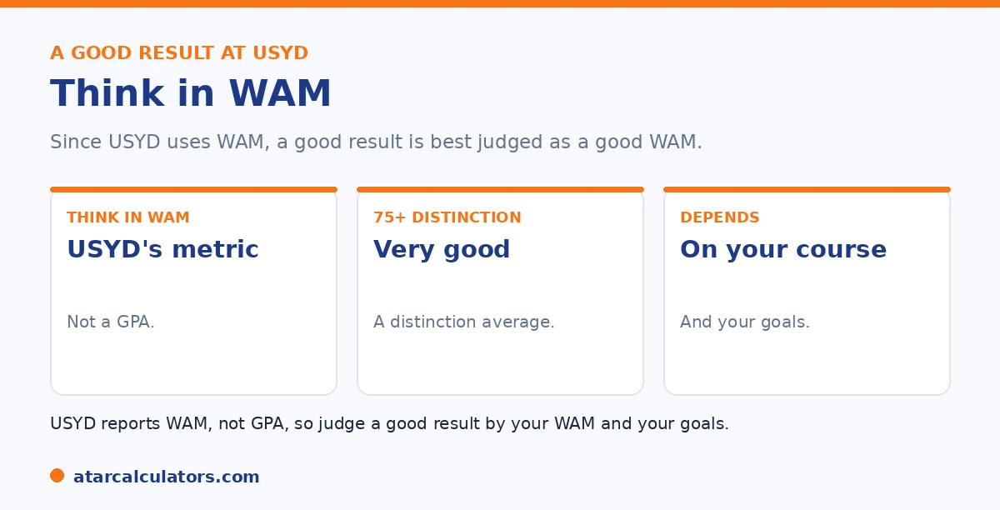

Here is the short version. Sydney uses the WAM, not a GPA, so a good result is best read in WAM terms. A WAM of 75 or above is a distinction average and genuinely very good. A WAM of 80 or above is excellent, in first-class honours territory. On an unofficial 7-point GPA estimate, that is roughly a 6 or higher. What counts as strong varies by course, so compare within your own field.
It is natural to want to know if your result is good. At Sydney, the honest answer involves a twist: there is no official GPA, so we read it in WAM.
Below is how to judge your result. To check yours, use our USYD calculator.
Key takeaways
- Sydney uses the WAM, not a GPA, so read results in WAM.
- A WAM of 75 or above is a distinction average and very good.
- A WAM of 80 or above is excellent.
- On a 7-point GPA estimate, that is roughly a 6 or higher.
- What counts as strong varies by course.
- Compare your result within your own field.
Read a good result in WAM
Start with the key point. Sydney does not use a GPA, so the most honest way to judge your result is by your WAM, Sydney's official measure. A good GPA at Sydney really means a good WAM.

So if you have calculated an unofficial GPA, that is fine as a rough guide. But the WAM is the figure that actually carries weight here. See our guide on whether Sydney uses WAM or GPA.
The benchmarks at Sydney
Here is how to read a Sydney WAM. A WAM of 75 or above is a distinction average, which is genuinely very good. A WAM of 80 or above is excellent, sitting in first-class honours territory.
Below that, a WAM in the high 60s to low 70s is a solid, credit-level result. So a good result really begins around 75, with anything in the 80s being a standout. See our guide on the distinction average.
What that is as a GPA estimate
If you do need a GPA figure, here is the rough translation on a 7-point scale. A distinction average, a WAM of 75 or above, sits around a 6 on that unofficial scale. An excellent WAM of 80 or above is higher still.
But remember this is an estimate, not a Sydney figure, and a different organisation may convert it differently. See our guide on estimating a USYD GPA.
Want to check your result?
Try the USYD calculator →What's good varies by course
The benchmarks are a starting point, not a fixed rule. What counts as a strong result varies by course and faculty. In some demanding fields, typical WAMs run lower, so a result that looks modest can be very competitive there.
So compare your result within your own course, not against a single figure. A WAM that is average in one field can be strong in another. See our guide on a good WAM in Australia.
Putting your result in context
To judge your result honestly, look at three things. Your WAM against the Sydney bands, how it compares within your course, and what your goals need, such as honours or postgraduate study.
A good result is one that meets your goals and stands up within your field. So focus on your WAM, compare within your course, and aim for the threshold your plans need. See our guide on honours and postgraduate requirements.
The reason to judge your result in context rather than against a single number is that "good" genuinely means different things depending on what you want and what you study. Against the Sydney bands, a Distinction average is a strong result and a High Distinction average is exceptional. But those labels only tell part of the story. Within your course, marking norms vary. An average that is middling in one discipline can be excellent in another where high marks are rarer. So comparing yourself to peers in your own field is more informative than a university-wide figure. And against your goals, the threshold that matters is the specific one your next step needs. First-class honours, entry to a research degree, a competitive graduate program, or a scholarship each sets its own bar. And a result that comfortably clears one may fall short of another. This is why chasing an abstract "good GPA" is less useful than working backwards from a concrete target. Decide what you are aiming for, find the exact WAM or GPA it needs, and measure your current result against that. Sanity-checking it against how marks fall in your particular course. Read that way, your result becomes something you can act on. Either it clears the threshold your plans need, or it tells you precisely how much ground to make up. It also shows where focused effort will move it most: in your higher-credit and later-year units.
A good GPA varies by faculty
What counts as a strong result can vary by faculty at USYD. Some disciplines grade more tightly, so averages run lower, while others award higher marks more freely. A WAM or GPA that is strong in one faculty may be middling in another.
So judge your result against typical outcomes in your own faculty and discipline, not just a universal benchmark. If your field grades hard, a slightly lower average can still be competitive within it.
Your trend matters too
A single number hides your trajectory. An improving average, rising each year, tells a positive story that a flat or falling one does not, even at the same final figure. Honours programs and employers do notice an upward trend.
So if your average started low and climbed, that trend is worth highlighting. It shows resilience and growth, which can offset a cumulative figure dragged down by early units.
Setting a USYD target
Rather than chase a perfect score, set a target based on your goal. For honours, aim for at least a solid credit-to-distinction average in your discipline; for competitive postgraduate entry or scholarships, aim for a distinction average.
Then work backwards to the marks you need in your remaining units. A clear target, matched to your goal, is far more useful than comparing yourself to an abstract idea of a “good” result.
Common questions
What's a good GPA at USYD?
Sydney uses the WAM, not a GPA, so a good result is best read in WAM terms. A WAM of 75 or above is a distinction average and very good, and 80 or above is excellent. On an unofficial 7-point GPA estimate, that is roughly a 6 or higher.
Does USYD have a GPA?
No. Sydney uses the WAM as its official measure and does not issue a GPA. So the most honest way to judge your result is by your WAM. Any GPA you calculate is an unofficial estimate, useful only as a rough guide.
What WAM is considered good at USYD?
A WAM of 75 or above is a distinction average and genuinely very good, while 80 or above is excellent and in first-class honours territory. A WAM in the high 60s to low 70s is a solid, credit-level result.
Does a good result depend on your course?
Yes. What counts as strong varies by course and faculty. In some demanding fields, typical WAMs run lower, so a result that looks modest can be very competitive. Compare your result within your own course rather than one figure.
What WAM is a 6 on a 7-point GPA scale?
Roughly a distinction average, a WAM of 75 or above, sits around a 6 on an unofficial 7-point scale. But this is an estimate, not a Sydney figure, and a different organisation may convert your marks differently.
See where your result stands
Check your Sydney average from your marks and credit points. Free, and no signup.
Open the USYD calculator →Related guides
This guide is general information for students, not formal academic advice. The University of Sydney's official academic metric is the WAM, and it does not issue or calculate an official GPA. Any GPA you work out is an unofficial estimate for your own use. Grade bands and honours requirements can vary by faculty and change over time, so always confirm with the University of Sydney directly. Reviewed by the ATARCalculators Editorial Team.